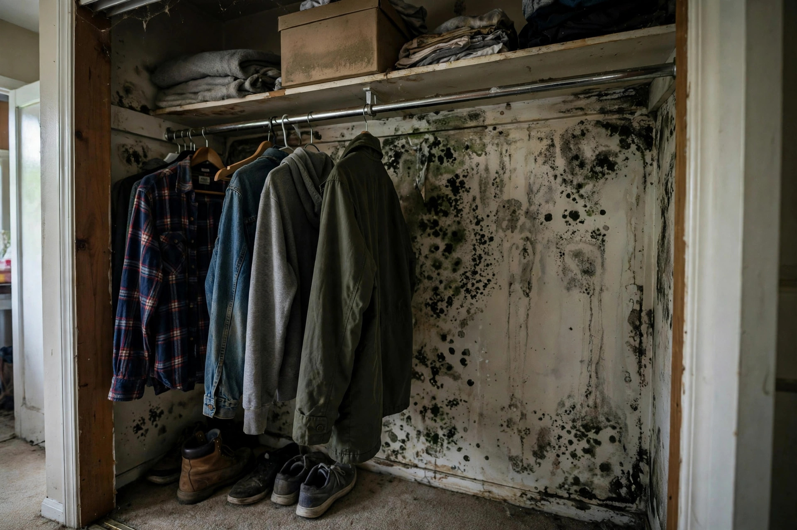

Closet Mold Removal in Kuna, ID
Kuna's newer homes seal heat in — and seal closet air off. An exterior-wall closet packed with clothes becomes a still, cool pocket where condensation feeds mold on drywall and baseboards. We clear the growth and open up the airflow that prevents it.

What happens when we come out
Find the cold spot
Thermal imaging locates the cold wall section and any insulation gap behind it. Moisture readings confirm whether the wall is actively damp or carrying old staining.
HEPA-clean the growth
Contained work area, HEPA vacuuming of the wall and baseboard, and removal of any drywall that cannot be cleaned. Your belongings are protected or moved first.
Fix the airflow
We address the root cause: insulation gaps get flagged, ventilation options are laid out, and simple changes like louvered doors or adjusted storage are recommended.
Confirm it is dry
Final moisture readings document the wall is dry. You get a written summary of what was found, what was done, and what to watch.
Closet habits that prevent regrowth
Leave breathing room against exterior wallsPull clothes and boxes two inches off the back wall. That gap is all the airflow the wall needs to stay dry.
Keep the door open when you canA closed closet in a tight Kuna build traps humidity for hours. Even a few open hours daily changes the equation.
Watch for cold stripes in winterRun your hand along the back wall on a cold morning. A distinctly cold band marks an insulation gap worth fixing.
Do not store damp itemsShoes worn in rain, gym bags, and just-dried laundry all add moisture to a small sealed space.
The closet mold formula
Cold wall + still air
Exterior-wall closets run cooler than the room. Clothes packed tight stop air movement, so the wall surface stays damp long enough for spores to take hold.
Tight new construction
Modern Kuna builds exchange less air with outside. Bedrooms stay comfortable, but closed closets accumulate the humidity that older, leakier homes vented away.
Insulation gaps
A missed batt or compressed insulation behind the closet wall creates a cold stripe. Growth follows that stripe in a telltale vertical pattern.
Concrete slab chill
Ground-floor closets on slabs pull cold upward. Shoes and boxes on the floor trap that chill against the baseboard — prime real estate for mold.
A closet call
Typical scenario (illustrative example — not a past job)
A renter in a three-year-old Kuna townhome finds speckled growth on the back wall of the primary closet and on a few shoes. The inspection finds the wall is the north exterior face, insulation was never installed in one bay, and the closet door stays shut 24 hours a day. The crew HEPA-cleans the wall, the insulation bay gets filled, and a louvered door suggestion goes in the report.
Clear the closet, fix the cause
Growth removed, airflow restored, and the cold-wall issue addressed — in one visit.
Open 24 hours · Kuna and the Treasure Valley